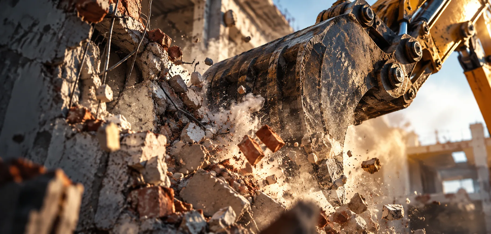
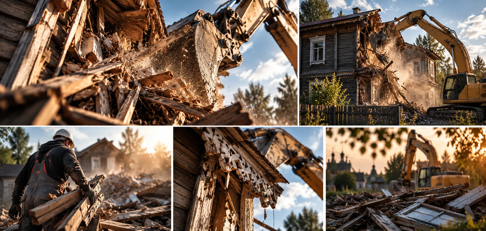
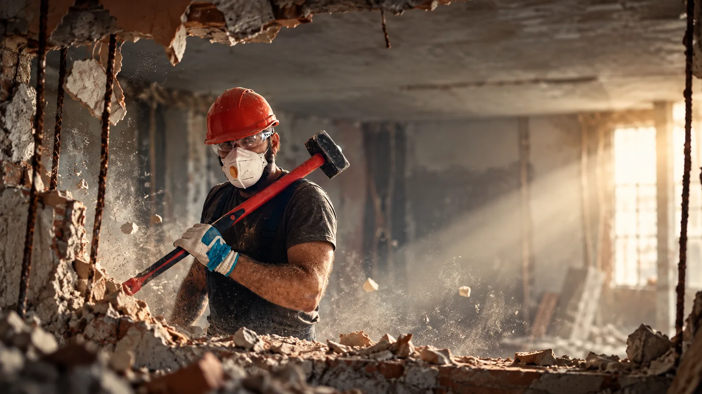
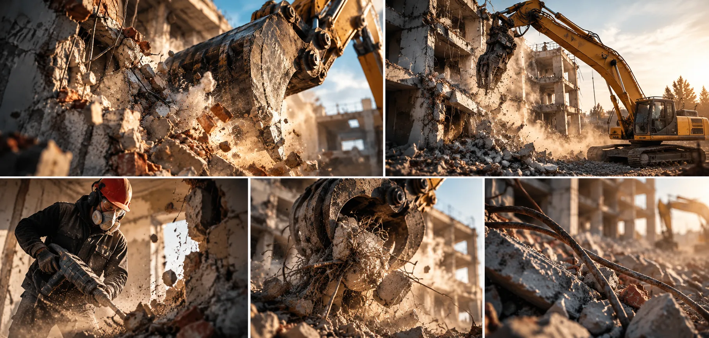

Иллюстрация / не выполненный объект03 / PROJECTSРабота, которую
Работа, которую
видно.
Галерея подготовлена под реальные кейсы: объект до демонтажа, ход работ, результат и состав выполненного.
Портфолио / демо
Кадр решает.
Факт подтверждает.
Сейчас здесь демонстрационная галерея дизайна. Она не заявляет выполненные заказы. Реальные объекты, адреса и отзывы должны появиться после подтверждения.

Иллюстрация / не кейс
Иллюстрация / не выполненный объект
Иллюстрация / не кейсГалерея не содержит заявлений о реально выполненных проектах DomPogrom.
Шаблон кейса
Содержательно,
не декоративно.
Каждый опубликованный кейс должен давать полезные сведения, а не просто красивый кадр.
01
До
Тип строения, материалы, площадь, ограничения участка и исходные фотографии.
02
Процесс
Метод, этапы, трудности и меры по сохранению окружающих объектов.
03
После
Состояние площадки, что вывезено, согласованный объём и фотосравнение.